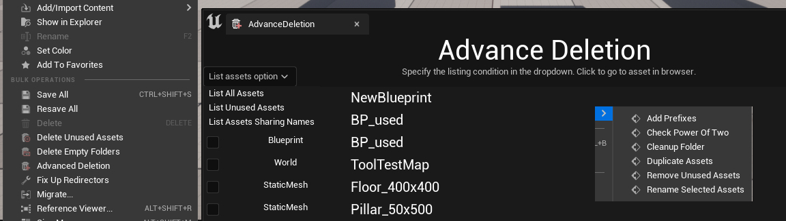

Unreal Engine 5 And Custom Editor Tools
Using C++, I have familiarised myself with and am continuing to learn about Unreal Engine 5 and custom editor tools.
I have used time outside of my course work and other learning to learn through multiple courses about C++ use of Unreal Engine Five, along with the creation of tools and utilities for it.
This currently includes the creation of quick asset actions accessed directly from the content browser menu, with their own icons and tooltips.
These utilities allow for actions such as the quick finding and deletion of unused assets and empty folders within a given folder.
Other scripted asset actions include automatic application of prefixes to assets, sorting into appropriate folders batch renaming or duplication and more.
I have also created an in-editor custom slate widget which allows the user to display a list of all assets within a given folder and sort these according to options such as only unused assets, or assets which share the same name with at least one other.
The list displays asset type, and through checkboxes allows the user to select and delete specific assets from the list.
Shown here is a widget to allow fast and simple creation of materials from their component files.
It not only produces properly laid-out material nodes, but also supports channel packing to fill in multiple channels from a single file
Shown here is a widget for quick selection and alteration of multiple assets in the editor.
The user may select assets by similar names to a selected asset, or a searchphrase, and duplicate along with altering the rotation, offset and scale by a random amount within user-defined limits.
This also interacts with the editor and improves its use through use of editor hotkeys, and integration into the world outliner, allowing easy display and toggling of the selection-lock status of all actors.
As well as the expansion of current features, I am also learning about and creating further features.
This section is actively being developed and will continue to be updated.
Made using C++, in Visual Studio 2022.